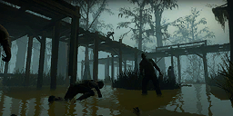
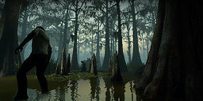
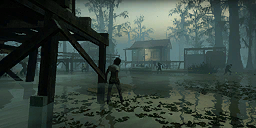
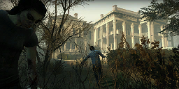

Campaña3
Swamp Fever

Descripción:
Swamp Fever abarca cuatro largos capítulos y tiene lugar en pantanos y ciénagas tipo Luisiana,
cerca de un barrio de chabolas llamado Village En Marais.
Cronológicamente, sigue a Dark Carnival y retoma la historia de los Supervivientes después
de que Nick le disparara al piloto del helicóptero debido a que este último se convirtió en un Infectado.
Una vez que se han sacudido tras el accidente del helicóptero, los supervivientes se encuentran varados
en medio de la nada y su única ruta hacia un lugar seguro pasa por una granja de caimanes, un avión comercial
derribado, pueblos pantanosos y, finalmente, en una plantación abandonada donde les espera su rescate.
En el camino, conocen una nueva raza de infectados: los Hombres de Barro.
Imagenes de la campaña:




-Volver a Campañas
-Anterior Campaña
-Siguiente Campaña